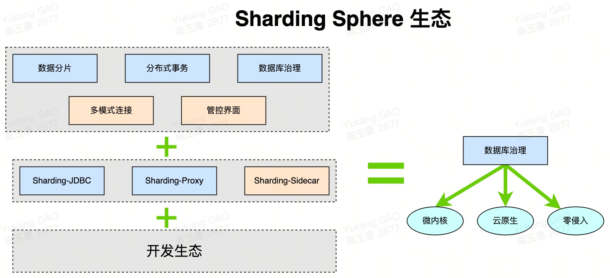
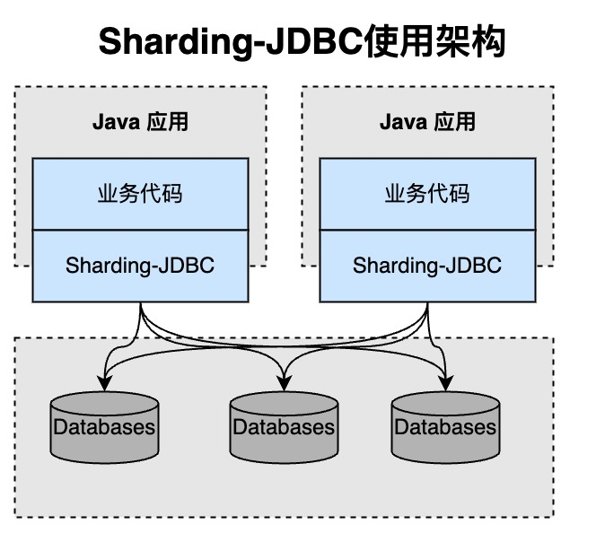
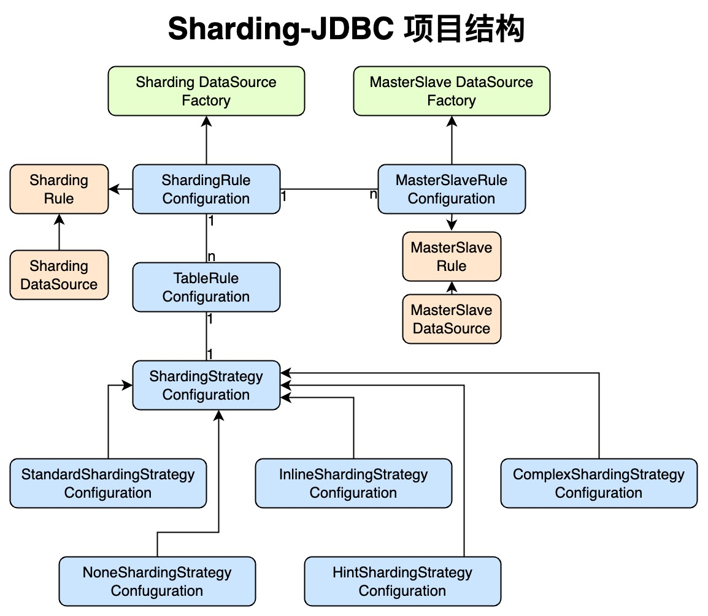
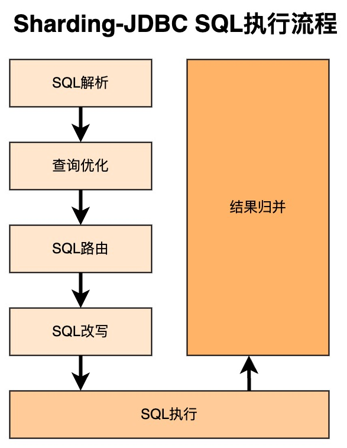
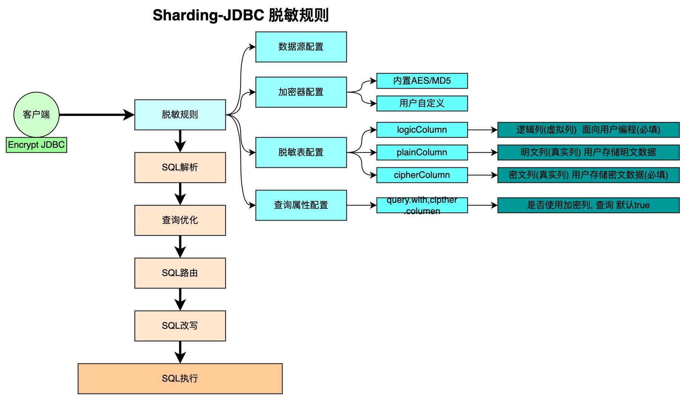
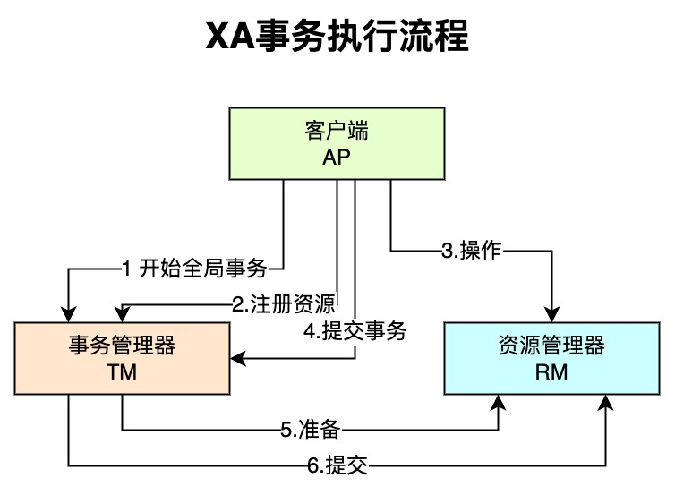
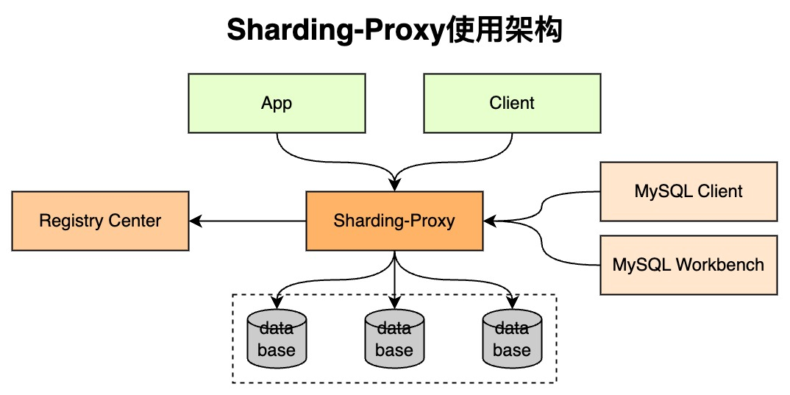

x1介绍: Apache ShardingSphere是一款开源的分布式数据库中间件组成的生态圈. 2 由Sharding-JDBC;Sharding-Proxy和Sharding-Sidecar(规划中)这3款相互独立的产品组成.3 他们均提供标准化的数据分片;分布式事务和数据库治理功能, 可适用于如Java同构|异构语言;容器;云原生等各种多样化的应用场景.4 官网地址: https://shardingsphere.apache.org/5 ShardingSphere定位为关系型数据库中间件, 旨在充分合理地在分布式的场景下利用关系型数据库的计算和存储能力, 而并非实现一个全新的关系型数据库.6 7产品介绍:8 -> Sharding-JDBC: 被定位为轻量级Java框架, 在Java的JDBC层提供的额外服务, 以jar包形式使用.9 -> Sharding-Proxy: 被定位为透明化的数据库代理端, 提供封装了数据库二进制协议的服务端版本, 用于完成对异构语言的支持.10 -> Sharding-Sidecar: 被定位为Kubernetes或Mesos的云原生数据库代理, 以DaemonSet的形式代理所有对数据库的访问.11
12对比:13 -> Sharding-JDBC可以任何的数据库;Sharding-Proxy只能MySQL;Sharding-Sidecar只能MySQL;14 -> Sharding-JDBC连接消耗高;Sharding-Proxy连接消耗低;Sharding-Sidecar连接消耗高;15 -> Sharding-JDBC仅支持Java;Sharding-Proxy不限制语言;Sharding-Sidecar不限制语言;16 -> Sharding-JDBC性能损耗低;Sharding-Proxy性能损耗一般;Sharding-Sidecar性能损耗低;17 -> Sharding-JDBC是中心化;Sharding-Proxy去中心化;Sharding-Sidecar是中心化;18 -> Sharding-JDBC没有静态入口;Sharding-Proxy有静态入口;Sharding-Sidecar没有静态入口;19


291介绍: Sharding-JDBC定位为轻量级Java框架, 在Java的JDBC层提供的额外服务. 2 使用客户端直连数据库, 以jar包形式提供服务, 无需额外部署和依赖, 可理解为增强版的JDBC驱动, 完全兼容JDBC和各种ORM框架的使用.3
4应用场景: 5 -> 适用于任何基于Java的ORM框架, 如:JPA;Hibernate;Mybatis;Spring JDBC Template或直接使用JDBC.6 -> 基于任何第三方的数据库连接池, 如:DBCP;C3P0;BoneCP;Druid;HikariCP等.7 -> 支持任意实现JDBC规范的数据库, 目前支持MySQL;Oracle;SQLServer和PostgreSQL.8
9功能:10 -> 数据分片: 分库;分表;读写分离;分片策略;分布式主键;11 -> 分布式事务: 标准化事务接口;XA强一致性事务;柔性事务;12 -> 数据库治理: 动态化配置;编排和治理;数据脱敏;可视化追踪链路;13
14项目结构介绍:15 -> 1.绿色代表入口API, 采用工厂方法提供.16 --> ShardingDataSourceFactory: 分库分表.17 --> MasterSlaveDataSourceFactory: 读写分离.18 -> 2. 蓝色代表配置对象, ShardingRuleConfiguration配置核心入口, 包含多个TableRuleConfiguration和MasterSlaveRuleConfiguration.19 --> TableRuleConfiguration: 封装表的分片配置信息, 有5种配置形式对应不同的Configuration类型.20 --> MasterSlaveRuleConfiguration: 封装读写分离配置信息.21 -> 3.图中黄色部分表示的是内部对象, 通过ShardingRuleConfiguration和MasterSlaveRuleConfiguration生成真正供ShardingDataSource和MasterSlaveDataSource使用的规则对象. 22 ShardingDataSource和MasterSlaveDataSource实现了DataSource接口, 是JDBC的完整实现方案.23
24初始化流程:25 -> 根据配置的信息生成Configuration对象.26 -> 通过Factory会将Configuration对象转化为Rule对象.27 -> 通过Factory会将Rule对象与DataSource对象封装.28 -> Sharding-JDBC使用DataSource进行分库分表和读写分离操作.29
121// POM2 <dependency>3 <groupId>org.apache.shardingsphere</groupId>4 <artifactId>sharding-jdbc-core</artifactId>5 <version>${latest.release.version}</version>6 </dependency>7// latest.release.version 对应真实使用的版本号8
9
10// 获取到dataSource11DataSource dataSource = ShardingDataSourceFactory.createDataSource(dataSourceMap,shardingRuleConfig, props);12
251相关概念介绍:2 -> 真实表: 数据库中真实存在的物理表(table0, table1).3 -> 逻辑表: 在分片之后, 同一类表结构的名称.4 -> 数据节点: 在分片之后, 由数据源和真实表组成(ds0.table0).5 -> 绑定表: 分片规则一致的关系表, 比如order和order_item都是按照order_id分片.6 -> 广播表: 针对数据量不大但是被需多表关联查询的表(比如配置表). 广播表可以存在不同的数据节点上内容完全一样.7
8分片算法介绍:9 -> 精确分片算法: PerciseShardingAlgoirthm, 处理使用单一键作为分片键的=与in进行分片的场景.10 -> 范围分片算法: RangeShardingAlgoirthm, 处理使用单一键作为分片键的between and, >, <,进行分片的场景.11 -> 复合分片算法: ComplexKeyShardingAlgoirthm, 处理使用多键作为分片键进行分片的场景, 多个分片键逻辑复杂, 需要自己处理复杂度.12 -> Hint分片算法: HintShardingAlgoirthm, 处理使用Hint分片的场景, 对于字段非sql决定, 由其他外置条件决定的场景, 使用sql hint可以灵活的注入分片字段. 13 sql hint支持通过java api 和sql注释两种方式使用.14
15分片策略介绍:16 -> 标准分片策略: StandardShardingStrategy, 只支持单分片键, 提供对SQL语句中的=;<;>;>=;<=;17 in;between and分片操作, 提供PreciseShardingAlgorithm和RangeShardingAlgorithm两个分片算法.18 PreciseShardingAlgorithm是必选的, RangeShardingAlgorithm是可选的. 但是SQL中使用了范围操作, 如果不配置RangeShardingAlgorithm会采用全库路由扫描, 效率低.19 -> 复合分片策略: ComplexShardingStrategy, 支持多分片键, 提供对SQL语句中=;<;>;>=;<=;20 in;between and分片操作, 由于多分片键之间的关系复杂, 因此并未进行过多的封装, 而是直接将分片键值组合以及分片操作符透传至分片算法, 完全由应用开发者实现, 提供最大的灵活度.21 -> 行表达式分片策略: InlineShardingStrategy, 只支持单分片键, 使用Groovy的表达式, 提供对SQL语句中的=和IN的分片操作支持. 22 简单的分片算法简单的配置使用, 如: t_user_$->{u_id % 8}表示t_user表根据u_id模8, 而分成8张表, 表名称为t_user_0到t_user_7.23 -> Hint分片策略: HintShardingStrategy, 通过Hint指定分片值而非从SQL中提取分片值的方式进行分片的策略.24 -> 不分片策略: NoneShardingStrategy, 不分片的策略.25

191sql执行流程:2 -> sql解析: 分为词法解析和语法解析, 通过词法解析将sql拆分成一个个单词, 在使用语法解析成上下文执行.3 -> 查询优化: 对组成的上下文进行查询优化, 判断是否可以走索引等.4 -> sql路由: 对优化好的sql进行分表路由.5 -> sql改写: 改写成在每个shard上需要分片执行的sql.6 -> sql执行: 执行sql.7 -> 结果归并: 拿到的各个shard上的结果进行合并.8 9sql规范: 仅在sharding-jdbc下使用的规范. 针对分库分表的时候有些sql没办法分库分表执行.10 -> 可以用的sql: 支持DQL;DML;DDL;DCL;TCL. 支持分页;去重;排序;分组;关联查询.11 -> 不能用的sql: 12 --> case when; having;union (all);13 --> 子查询只能使用一层子查询并且子查询中不能出现函数;14 --> insert into table_name values() 语句不支持运算表达式, 在values中使用表达式.15
16分页查询优化:17 -> 问题: 比如select * from table_name order by id limit 0, 1000010, mysql会进行全表扫描, 在分库的情况下会去除1000010条进行截取, 效率进一步降级.18 -> 优化: 首先采用流式处理+归并排序的方式来避免内存的过量占用;其次ShardingSphere对仅落至单节点的查询进行进一步优化.19
91行表达式介绍: InlineShardingStrategy, 采用Inline行表达式进行分片. Inline可以简化数据节点和分片算法的配置信息.2 主要目的是配置简化.3
4语法格式: 整体格式${expression}或$->{expression}.5 -> ${begin..end}: 范围区间.6 -> ${[unit1, unit2, unit_x]}: 表示枚举值.7 --> Demo: ${['online', 'offline']}_table${1..3}等效于online_table1, online_table2, online_table3, offline_table1, offline_table2, offline_table3.8 --> 注意: 行表达式如果出现多个${}或$->{}表达式, 整个表达式结果会将每个子表达式结果进行笛卡尔(积)组合.9
561主键生成介绍: Sharding-JDBC提供了分布式主键生成器, 例如UUID;SNOWFLAKE, 还抽离出分布式主键生成器的接口, 方便用户自行实现自定义的自增主键生成器.2
3SNOWFLAKE: 在分片规则配置模块配置每个表的主键生成策略, 默认使用雪花算法, 生成64bit的长整型数据.4
5自定义主键生成器规范:6 -> 自定义主键类, 实现ShardingKeyGenerator接口.7 -> 按SPI规范配置自定义主键类: 在Apache ShardingSphere中, 很多功能实现类的加载方式是通过SPI注入的方式完成的. 8 注意在resources目录下新建META-INF文件夹, 再新建services文件夹, 然后新建文件的名字为org.apache.shardingsphere.spi.keygen.ShardingKeyGenerator, 9 打开文件, 复制自定义主键类全路径到文件中保存.10 -> 修改配置:11 #对应主键字段名12 spring.shardingsphere.sharding.tables.t_book.key-generator.column=id13 #对应主键类getType返回内容14 spring.shardingsphere.sharding.tables.t_book.key-generator.type=TESTKEY15
16使用SNOWFLAKE作为生成主键:17 -> 1.配置:18 spring.shardingsphere.sharding.tables.t_user.key-generator.column=id19 spring.shardingsphere.sharding.tables.t_user.key-generator.type=SNOWFLAKE20 -> 2. PO中注解 (strategy = GenerationType.IDENTITY)21
22 23自定义主键生成器Demo:24 -> 1.自定义主键类:25 public class MyId implements ShardingKeyGenerator {26
27 //调用雪花算法的方法28 private ShardingKeyGenerator snow = new SnowflakeShardingKeyGenerator();29
30 31 public Comparable<?> generateKey() {32 System.out.println("-----自定义key-----");33 return snow.generateKey();34 }35
36 37 public String getType() {38 return "MY_KEY";39 }40
41 42 public Properties getProperties() {43 return null;44 }45
46 47 public void setProperties(Properties properties) {48 }49 }50 -> 2.配置类:51 spring.shardingsphere.sharding.tables.user.key-generator.column=id52 spring.shardingsphere.sharding.tables.user.key-generator.type=MY_KEY53 -> 3. SPI配置54 创建: META-INF/services/org.apache.shardingsphere.spi.keygen.ShardingKeyGenerator55 内容: com.sharding.id.MyId56
101广播表介绍: 修改时所有表数据都会跟着修改, 走的是全路由.2 3广播表配置:4 // 指定表名5 spring.shardingsphere.sharding.broadcast-tables=city6 // 指定主键7 spring.shardingsphere.sharding.tables.city.key-generator.column=id8 // 主键生成策略9 spring.shardingsphere.sharding.tables.city.key-generator.type=SNOWFLAKE10
251-> 1.POM2 <!-- 3 https://mvnrepository.com/artifact/org.apache.shardingsphere/shardingsphere-jdbc-core-spring-boot-starter 4 -->5<dependency>6 <groupId>org.apache.shardingsphere</groupId>7 <artifactId>shardingsphere-jdbc-core-spring-boot-starter</artifactId>8 <version>5.2.0</version>9</dependency>10 11-> 2. 配置信息12spring.shardingsphere.rules.sharding.tables.service_record.table-strategy.standard.sharding-column = user_id13spring.shardingsphere.rules.sharding.tables.service_record.table-strategy.standard.sharding-algorithm-name = service_record_table_inline14spring.shardingsphere.rules.sharding.tables.service_record.actual-data-nodes = ds0.service_record_$->{0..7}15spring.shardingsphere.rules.sharding.sharding-algorithms.service_record_table_inline.type = INLINE16spring.shardingsphere.rules.sharding.sharding-algorithms.service_record_table_inline.props.algorithm-expression = service_record_$->{user_id.toLong() % 8}17spring.shardingsphere.props.sql-show = true18spring.shardingsphere.datasource.names = ds019spring.shardingsphere.datasource.ds0.type = com.zaxxer.hikari.HikariDataSource20spring.shardingsphere.datasource.ds0.driver-class-name = com.mysql.jdbc.Driver21spring.shardingsphere.datasource.ds0.jdbc-url = jdbc:mysql://url22spring.shardingsphere.datasource.ds0.username = root23spring.shardingsphere.datasource.ds0.password = root24spring.shardingsphere.datasource.ds0.hikari.idle-timeout = 12000025spring.shardingsphere.datasource.ds0.hikari.maximum-pool-size = 30
921介绍: 透明化读写分离所带来的影响, 让使用方尽量像使用一个数据库一样使用主从数据库集群, 是ShardingSphere读写分离模块的主要设计目标.2
3核心功能模块:4 -> 提供一主多从的读写分离配置. 仅支持单主库, 可以支持独立使用, 也可以配合分库分表使用.5 -> 独立使用读写分离, 支持SQL透传. 不需要SQL改写流程.6 -> 同一线程且同一数据库连接内, 能保证数据一致性. 如果有写入操作, 后续的读操作均从主库读取.7 -> 基于Hint的强制主库路由. 可以强制路由走主库查询实时数据, 避免主从同步数据延迟.8
9不支持功能:10 -> 主库和从库的数据同步.11 -> 主库和从库的数据同步延迟.12 -> 主库双写或多写(多主).13 -> 跨主库和从库之间的事务的数据不一致, 建议在主从架构中, 事务中的读写均用主库操作.14
15单个主从配置: (注意Sharding的一个bug就是在配置主从的时候雪花算法失效)16 #配置数据源17 spring.shardingsphere.datasource.names=master,slave018
19 #配置两个数据源20 spring.shardingsphere.datasource.master.type=com.zaxxer.hikari.HikariDataSource21 spring.shardingsphere.datasource.master.driver-class-name=com.mysql.jdbc.Driver22 spring.shardingsphere.datasource.master.jdbc-url=jdbc:mysql://localhost:3306/db023 spring.shardingsphere.datasource.master.username=root24 spring.shardingsphere.datasource.master.password=root25
26 spring.shardingsphere.datasource.slave0.type=com.zaxxer.hikari.HikariDataSource27 spring.shardingsphere.datasource.slave0.driver-class-name=com.mysql.jdbc.Driver28 spring.shardingsphere.datasource.slave0.jdbc-url=jdbc:mysql://localhost:3306/db129 spring.shardingsphere.datasource.slave0.username=root30 spring.shardingsphere.datasource.slave0.password=root31
32 #master-slave33 spring.shardingsphere.masterslave.name=datasource34 spring.shardingsphere.masterslave.master-data-source-name=master35 spring.shardingsphere.masterslave.slave-data-source-names=slave036 spring.shardingsphere.masterslave.load-balance-algorithm-type=ROUND_ROBIN37
38 #table t_direct id39 spring.shardingsphere.sharding.tables.user.key-generator.column=id40 spring.shardingsphere.sharding.tables.user.key-generator.type=SNOWFLAKE41
42主从+分片配置:43 -> 以student表作为主从+分片的配置;student表结构(id，age，name), 配置表分别为student0;student1.44 #配置数据源45 spring.shardingsphere.datasource.names=master0,master1,slave0,slave146
47 #配置数据源48 spring.shardingsphere.datasource.master0.type=com.zaxxer.hikari.HikariDataSource49 spring.shardingsphere.datasource.master0.driver-class-name=com.mysql.jdbc.Driver50 spring.shardingsphere.datasource.master0.jdbc-url=jdbc:mysql://192.168.159.128:3306/demo051 spring.shardingsphere.datasource.master0.username=root52 spring.shardingsphere.datasource.master0.password=root53
54 spring.shardingsphere.datasource.master1.type=com.zaxxer.hikari.HikariDataSource55 spring.shardingsphere.datasource.master1.driver-class-name=com.mysql.jdbc.Driver56 spring.shardingsphere.datasource.master1.jdbc-url=jdbc:mysql://192.168.159.128:3306/demo157 spring.shardingsphere.datasource.master1.username=root58 spring.shardingsphere.datasource.master1.password=root59
60 spring.shardingsphere.datasource.slave0.type=com.zaxxer.hikari.HikariDataSource61 spring.shardingsphere.datasource.slave0.driver-class-name=com.mysql.jdbc.Driver62 spring.shardingsphere.datasource.slave0.jdbc-url=jdbc:mysql://192.168.159.129:3306/demo063 spring.shardingsphere.datasource.slave0.username=root64 spring.shardingsphere.datasource.slave0.password=root65
66 spring.shardingsphere.datasource.slave1.type=com.zaxxer.hikari.HikariDataSource67 spring.shardingsphere.datasource.slave1.driver-class-name=com.mysql.jdbc.Driver68 spring.shardingsphere.datasource.slave1.jdbc-url=jdbc:mysql://192.168.159.129:3306/demo169 spring.shardingsphere.datasource.slave1.username=root70 spring.shardingsphere.datasource.slave1.password=root71
72 #分库73 spring.shardingsphere.sharding.tables.student.database-strategy.inline.sharding-column=id74 spring.shardingsphere.sharding.tables.student.database-strategy.inline.algorithm-expression=master${id % 2}75 #分表76 spring.shardingsphere.sharding.tables.student.actual-data-nodes=master${0..1}.student${0..1}77 spring.shardingsphere.sharding.tables.student.table-strategy.inline.sharding-column=id78 spring.shardingsphere.sharding.tables.student.table-strategy.inline.algorithm-expression=student${id % 2}79
80 #配置主从81 #master-slave82 spring.shardingsphere.sharding.master-slave-rules.master0.master-data-source-name=master083 spring.shardingsphere.sharding.master-slave-rules.master0.slave-data-source-names=slave084 spring.shardingsphere.sharding.master-slave-rules.master0.load-balance-algorithm-type=ROUND_ROBIN85 spring.shardingsphere.sharding.master-slave-rules.master1.master-data-source-name=master186 spring.shardingsphere.sharding.master-slave-rules.master1.slave-data-source-names=slave187 spring.shardingsphere.sharding.master-slave-rules.master1.load-balance-algorithm-type=ROUND_ROBIN88
89 #table student key90 spring.shardingsphere.sharding.tables.student.key-generator.column=id91 spring.shardingsphere.sharding.tables.student.key-generator.type=SNOWFLAKE92
691介绍: Hint路由指的是通过业务代码路由到指定的节点上的方式. 使用Hint的话其他的路由方式会失效.2 HintManager主要是通过ThreadLocal管理分片键的信息, 进行hint强制路由. 因为是ThreadLocal因此添加的配置信息只能在当前线程内有效.3
4使用场景:5 -> 数据分片操作, 如果分片键没有在SQL或数据表中, 而是在业务逻辑代码中.6 -> 读写分离操作, 如果强制在主库进行某些数据操作.7
8配置信息:9 spring.shardingsphere.datasource.names=db0,db110
11 #配置两个数据源12 spring.shardingsphere.datasource.db0.type=com.zaxxer.hikari.HikariDataSource13 spring.shardingsphere.datasource.db0.driver-class-name=com.mysql.jdbc.Driver14 spring.shardingsphere.datasource.db0.jdbc-url=jdbc:mysql://localhost:3306/db015 spring.shardingsphere.datasource.db0.username=root16 spring.shardingsphere.datasource.db0.password=root17
18
19 spring.shardingsphere.datasource.db1.type=com.zaxxer.hikari.HikariDataSource20 spring.shardingsphere.datasource.db1.driver-class-name=com.mysql.jdbc.Driver21 spring.shardingsphere.datasource.db1.jdbc-url=jdbc:mysql://localhost:3306/db122 spring.shardingsphere.datasource.db1.username=root23 spring.shardingsphere.datasource.db1.password=root24
25 #table student key26 spring.shardingsphere.sharding.tables.student.key-generator.column=id27 spring.shardingsphere.sharding.tables.student.key-generator.type=SNOWFLAKE28
29 #hint指定算法类30 spring.shardingsphere.sharding.tables.user.31 database-strategy.hint.algorithm-class-name=com.sharding._01jdbc._03hint.hint.MyHintShardingAlgorithm32
33算法代码:34 public class MyHintShardingAlgorithm implements HintShardingAlgorithm<Long> {35
36 /**37 * 编写具体的逻辑38 *39 * @param availableTargetNames 可用的db名称40 * @param shardingValue 传入的hint值41 * @return 返回42 */43 44 public Collection<String> doSharding(45 Collection<String> availableTargetNames, HintShardingValue<Long> shardingValue) {46 List<String> result = new ArrayList<>();47 for (String availableTargetName : availableTargetNames) {48 for (Long value : shardingValue.getValues()) {49 //结尾是0、1的话就会执行50 if (availableTargetName.endsWith(String.valueOf(value%2))) {51 result.add(availableTargetName);52 }53 }54 }55 return result;56 }57 }58
59测试:60 61 public void testQueyUser() throws Exception {62 //业务代码中指定63 HintManager hintManager = HintManager.getInstance();64 //说明 1L的话在算法中就睡1%2=1 会走到db1上 0L的话会走到db0上65 hintManager.setDatabaseShardingValue(0L);66 List<User> all = userRepository.findAll();67 System.out.println(all);68 }69

681介绍: 数据脱敏是对某些信息通过脱敏规则进行数据的改变, 实现敏感隐私数据的保护. 数据脱敏属于ShardingSphere分布式治理核心的功能. ShardingSphere自动化透明化了数据脱敏过程, 用户无需关注数据脱敏的实现细节, 像使用普通数据那样使用脱敏数据.2 -> 在更新操作时, 它通过对用户输入的SQL进行解析, 并依据用户提供的脱敏配置对SQL进行改写.3 -> 从而实现对原文数据进行加密, 并将密文数据存储到底层数据库. 在查询数据时, 它又从数据库中取出密文数据, 并对其解密, 最终将解密后的原始数据返回给用户.4
5Encrypt-JDBC: Encrypt-JDBC和业务代码部署在一起, 业务方需面向Encrypt-JDBC进行JDBC编程.6 Encrypt-JDBC将用户发起的SQL进行拦截, 并通过SQL语法解析器进行解析;理解SQL行为. 7 再依据用户传入的脱敏规则, 找出需要脱敏的字段和所使用的加解密器对目标字段进行加解密处理后, 再与底层数据库进行交互.8
9脱敏规则: 10 -> 数据源配置: 指DataSource的配置信息.11 -> 加密器配置: 指使用什么加密策略进行加解密. 目前ShardingSphere内置了两种加解密策略AES/MD5.12 -> 脱敏表配置: 指定哪个列用于存储密文数据(cipherColumn);哪个列用于存储明文数据(plainColumn)以及用户想使用哪个列进行SQL编写(logicColumn).13 -> 查询属性的配置: 当底层数据库表里同时存储了明文数据;密文数据后, 该属性开关用于决定是直接查询数据库表里的明文数据进行返回, 还是查询密文数据通过Encrypt-JDBC解密后返回.14
15加密策略:16 -> Encryptor: 该解决方案通过提供encrypt(), decrypt()两种方法对需要脱敏的数据进行加解密. 17 在用户进行INSERT;DELETE;UPDATE时, ShardingSphere会按照用户配置, 对SQL进行解析;改写;路由, 18 并会调用encrypt()将数据加密后存储到数据库, 而在SELECT时, 则调用decrypt()方法将从数据库中取出的脱敏数据进行逆向解密, 最终将原始数据返回给用户. 19 当前, ShardingSphere针对这种类型的脱敏解决方案提供了两种具体实现类, 分别是MD5(不可逆), AES(可逆), 用户只需配置即可使用这两种内置的方案.20 -> QueryAssistedEncryptor: 该方案更为安全和复杂. 相同的数据, 如两个用户的密码相同, 它们在数据库里存储的脱敏数据也应当是不一样的. 21 这种理念更有利于保护用户信息, 防止撞库成功. 它提供三种函数进行实现, 分别是encrypt();decrypt();queryAssistedEncrypt().22 在encrypt()阶段, 用户通过设置某个变动种子, 例如时间戳. 针对原始数据+变动种子组合的内容进行加密, 就能保证即使原始数据相同, 也因为有变动种子的存在, 致使加密后的脱敏数据是不一样的.23 在decrypt()可依据之前规定的加密算法, 利用种子数据进行解密. 24 queryAssistedEncrypt()用于生成辅助查询列, 用于原始数据的查询过程. 25 当前, ShardingSphere针对这种类型的脱敏解决方案并没有提供具体实现类, 却将该理念抽象成接口, 提供给用户自行实现. ShardingSphere将调用用户提供的该方案的具体实现类进行数据脱敏.26
27Demo:28 -> 1.login表包含字段(id,username,password) 配置信息:29 #加密配置30 spring.shardingsphere.datasource.names=db031
32 #配置两个数据源33 spring.shardingsphere.datasource.db0.type=com.zaxxer.hikari.HikariDataSource34 spring.shardingsphere.datasource.db0.driver-class-name=com.mysql.jdbc.Driver35 spring.shardingsphere.datasource.db0.jdbc-url=jdbc:mysql://localhost:3306/db036 spring.shardingsphere.datasource.db0.username=root37 spring.shardingsphere.datasource.db0.password=root38 #table login key39 spring.shardingsphere.sharding.tables.login.key-generator.column=id40 spring.shardingsphere.sharding.tables.login.key-generator.type=SNOWFLAKE41
42 #加密43 #指定明文存储 属性中的password指的是逻辑字段可以是表中不存在的44 #spring.shardingsphere.encrypt.tables.login.columns.psd.plain-column=password45 #指定密文存储46 spring.shardingsphere.encrypt.tables.login.columns.psd.cipher-column=password47
48 #指定加密算法49 spring.shardingsphere.encrypt.encryptors.my_password.type=aes50 spring.shardingsphere.encrypt.encryptors.my_password.props.aes.key.value=123451 spring.shardingsphere.encrypt.tables.login.columns.psd.encryptor=my_password52 #是否使用密文查询53 spring.shardingsphere.props.query.with.cipher.column=true54 -> 2.PO55 56 (name = "login")57 public class Login {58 59 (name = "id")60 (strategy = GenerationType.IDENTITY)61 private Long id;62 (name = "psd") //指定逻辑字段数据表中不一定存在63 private String psd;64 (name = "username")65 private String username;66 ｝67 -> 3.注意: 在配置的时候设置名文和密文使用的是逻辑字段, 逻辑字段是在Entity中进行配置的.68

981分布式事务回顾:2理论:3 -> CAP理论: Consistence一致性;Availablity可用性;Partitiontolerance分区容错性.4 --> 一致性: 多个副本之间保证数据严格的一致性.5 --> 可用性: 服务保证正常运转.6 --> 分区容错性: 分布式中出现网络故障时, 需要对外提供满足一致性和可用性的服务.7 --> 实际: 常见的服务AP(Eureka);CP(Zookeeper).8 -> Base理论: 最终一致性, 在保证AP的同时, 最终保证数据的一致性.9事务模式:10 -> 2PC: 强一致性, 两阶段提交, 准备阶段;提交阶段.11 --> 准备阶段: 协调者(事务发起者)向所有参与者(事务执行者)询问是否可提交事务, 并等待所有参与者答复, 各参与者不提交事务但将信息记录在undo和redo日志中, 参与者执行成功反馈yes否则返回no.12 --> 提交阶段: 协调者收到参与者如果存咋失败或超时, 就让所有参与者回滚, 成功让所有参与者提交.13 --> 问题: 性能问题;可靠性问题;数据一致性问题.14 -> 3PC: 强一致性, 三阶段提交, 准备阶段;预提交;提交阶段.15 --> 准备阶段: 协调者向参与者发送commit请求, 参与者如果可以提交就返回yes响应, 否则返回no响应.16 --> 预提交阶段: 协调者根据阶段1参与者的反应情况执行预提交事务或中断事务操作. 17 ---> 参与者反馈yes: 协调者向所有参与者发出preCommit请求, 参与者收到preCommit之后, 执行事务, 但不提交 18 ---> 参与者反馈no或超时: 协调者向所有参与者发出abort请求, 中断事务. 19 --> 提交阶段: 该阶段进行真正的事务提交, 根据阶段2反馈的结果完成事务提交或中断操作. 20 -> XA: 强一致性, 基于2PC, 添加了全局事务管理器和局部资源管理器. MySQL在这个XA事务中扮演的是参与者的角色, 而不是事务管理器.21 --> 第一阶段: 事务管理器用来保证所有的事务参与者都完成了准备工作.22 --> 第二阶段: 如果事务管理器收到所有参与者都准备好的消息，就会通知所有的事务都可以提交了.23 -> TCC: 最终一致性, Try Confirm Cancel, 基于2PC模型.24 --> Try: 操作作为一阶段, 负责资源的检查和预留.25 --> Confirm: 操作作为二阶段提交操作, 执行真正的业务.26 --> Cancel: 是预留资源的取消.27 -> 消息队列: 最终一致性, 将需要分布式处理的任务通过消息日志的方式来异步执行. 消息日志可以存储到本地文本;数据库或MQ中间件, 再通过业务规则人工发起重试.28 -> saga: 最终一致性, 一个Saga事务是一个有多个短时事务组成的长时的事务, 把一个Saga分布式事务看做是一个由多个本地事务组成的事务, 每个本地事务都有一个与之对应的补偿事务.29
30 31Sharding-JDBC整合分布式事务:32 -> Sharding-JDBC整合XA.33 -> Sharding-JDBC整合Saga.34 -> Sharding-JDBC整合Seata.35
36整合XA Demo:37 <!-- 使用XA事务时，需要引入此模块 -->38 <dependency>39 <groupId>org.apache.shardingsphere</groupId>40 <artifactId>sharding-transaction-xa-core</artifactId>41 <version>4.1.1</version>42 </dependency>43
44 启动类上 贴上注解45 业务方法上贴上注解46 47 (TransactionType.XA)48
49整合sega模式50 -> 1.demo 51 <dependency>52 <groupId>io.shardingsphere</groupId>53 <artifactId>sharding-transaction-base-saga</artifactId>54 <version>4.0.0-RC2</version>55 </dependency>56 启动类上 贴上注解57 业务方法上贴上注解58 59 (TransactionType.BASE)60
61 -> 2.配置:62 #指定是否启动磁盘日志，默认为true。在生产环境下一定要保证为true，否则数据的完整性无法保证63 com.atomikos.icatch.enable_logging=true64 #JTA/XA资源是否应该自动注册65 com.atomikos.icatch.automatic_resource_registration=true66 #JTA事务的默认超时时间，默认为10000ms67 com.atomikos.icatch.default_jta_timeout=1000068 #事务的最大超时时间，默认为300000ms。这表示事务超时时间由UserTransaction.setTransactionTimeout()较大者决定。4.x版本之后，指定为0的话则表示不设置超时时间69 com.atomikos.icatch.max_timeout=30000070 #指定在两阶段提交时，是否使用不同的线程(意味着并行)。3.7版本之后默认为false，更早的版本默认为true。如果为false，则提交将按照事务中访问资源的顺序进行。71 com.atomikos.icatch.threaded_2pc=false72 #指定最多可以同时运行的事务数量，默认值为50，负数表示没有数量限制。在调用UserTransaction.begin()方法时，可能会抛出一个”Max number of active transactionsreached”异常信息，表示超出最大事务数限制73 com.atomikos.icatch.max_actives=5074 #是否支持subtransaction，默认为true75 com.atomikos.icatch.allow_subtransactions=true76 #指定在可能的情况下，否应该join 子事务(subtransactions)，默认值为true。如果设置为false，对于有关联的不同subtransactions，不会调用XAResource.start(TM_JOIN)77 com.atomikos.icatch.serial_jta_transactions=true78 #指定JVM关闭时是否强制(force)关闭事务管理器，默认为false79 com.atomikos.icatch.force_shutdown_on_vm_exit=false80 #在正常关闭(no-force)的情况下，应该等待事务执行完成的时间，默认为Long.MAX_VALUE81 com.atomikos.icatch.default_max_wait_time_on_shutdown=922337203685477580782 ========= 日志记录配置=======83 #事务日志目录，默认为./。84 com.atomikos.icatch.log_base_dir=./85 #事务日志文件前缀，默认为tmlog。事务日志存储在文件中，文件名包含一个数字后缀，日志文件以.log为扩展名，如tmlog1.log。遇到checkpoint时，新的事务日志文件会被创建，数字增加。86 com.atomikos.icatch.log_base_name=tmlog87 #指定两次checkpoint的时间间隔，默认为50088 com.atomikos.icatch.checkpoint_interval=50089 =========日志恢复配置=============90 #指定在多长时间后可以清空无法恢复的事务日志(orphaned)，默认86400000ms91 com.atomikos.icatch.forget_orphaned_log_entries_delay=8640000092 #指定两次恢复扫描之间的延迟时间。默认值为与com.atomikos.icatch.default_jta_timeout相同93 com.atomikos.icatch.recovery_delay=${com.atomikos.icatch.default_jta_timeout}94 #提交失败时，再抛出一个异常之前，最多可以重试几次，默认值为595 com.atomikos.icatch.oltp_max_retries=596 #提交失败时，每次重试的时间间隔，默认10000ms97 com.atomikos.icatch.oltp_retry_interval=1000098

881介绍: Sharding-Proxy主要是针对数据库做的代理, 类似于MySQL-Proxy, 与Sharding-JDBC区别是Sharding是针对服务端的代理不受限于客户端的语言, 2 Sharding-JDBC只适用于Java端. 目前先提供MySQL版本, 它可以使用任何兼容MySQL协议的访问客户端(如:MySQL Command Client, MySQL Workbench等操作数据, 对DBA更友好).3
4使用:5 -> 1.下载地址: https://archive.apache.org/dist/shardingsphere/6 -> 2.配置: server.yaml7 authentication:8 users:9 root:10 password: root11 sharding:12 password: sharding 13 authorizedSchemas: sharding_db14 #15 props:16 max.connections.size.per.query: 117 acceptor.size: 16 # The default value is available processors count * 2.18 executor.size: 16 # Infinite by default.19 proxy.frontend.flush.threshold: 128 # The default value is 128.20 # LOCAL: Proxy will run with LOCAL transaction.21 # XA: Proxy will run with XA transaction.22 # BASE: Proxy will run with B.A.S.E transaction.23 proxy.transaction.type: LOCAL24 proxy.opentracing.enabled: false25 proxy.hint.enabled: false26 query.with.cipher.column: true27 sql.show: false28 allow.range.query.with.inline.sharding: false29 ->3.配置: config-sharding.yml30 dataSources:31 ds_0:32 url: jdbc:postgresql://127.0.0.1:5432/demo_ds_0?serverTimezone=UTC&useSSL=false33 username: postgres34 password: postgres35 connectionTimeoutMilliseconds: 3000036 idleTimeoutMilliseconds: 6000037 maxLifetimeMilliseconds: 180000038 maxPoolSize: 5039 ds_1:40 url: jdbc:postgresql://127.0.0.1:5432/demo_ds_1?serverTimezone=UTC&useSSL=false41 username: postgres42 password: postgres43 connectionTimeoutMilliseconds: 3000044 idleTimeoutMilliseconds: 6000045 maxLifetimeMilliseconds: 180000046 maxPoolSize: 5047
48 shardingRule:49 tables:50 t_order:51 actualDataNodes: ds_${0..1}.t_order_${0..1}52 tableStrategy:53 inline:54 shardingColumn: order_id55 algorithmExpression: t_order_${order_id % 2}56 keyGenerator:57 type: SNOWFLAKE58 column: order_id59 t_order_item:60 actualDataNodes: ds_${0..1}.t_order_item_${0..1}61 tableStrategy:62 inline:63 shardingColumn: order_id64 algorithmExpression: t_order_item_${order_id % 2}65 keyGenerator:66 type: SNOWFLAKE67 column: order_item_id68 bindingTables:69 - t_order,t_order_item70 defaultDatabaseStrategy:71 inline:72 shardingColumn: user_id73 algorithmExpression: ds_${user_id % 2}74 defaultTableStrategy:75 none:76 ->4.启动: 默认端口3307.77
78注意:79 -> Sharding-Proxy 默认不支持hint, 如需支持, 请在conf/server.yaml中, 将props的属性proxy.hint.enabled设置为true. 在Sharding-Proxy中, HintShardingAlgorithm的泛型只能是String类型.80 -> Sharding-Proxy默认使用3307端口, 可以通过启动脚本追加参数作为启动端口号. 如:bin/start.sh 330881 -> Sharding-Proxy使用conf/server.yaml配置注册中心;认证信息以及公用属性.82 -> Sharding-Proxy支持多逻辑数据源, 每个以"config-"做前缀命名yaml配置文件. 即为一个逻辑数据源.83 -> 在业务代码中使用的时候只需要连接ShardingProxy对外暴漏的数据库名和端口名即可.84
85问题:86 -> 1. 单点问题.87 -> 2. 无法感知节点故障问题比如slave节点宕机无法感知.88